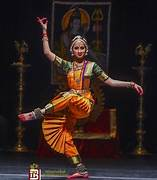
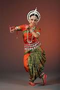
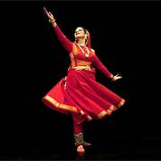
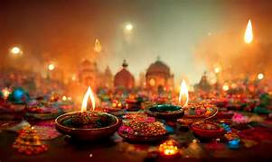
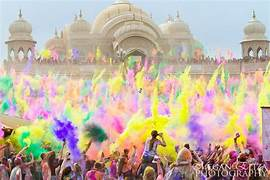
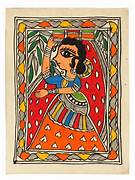
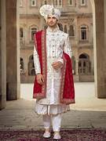

Jelajahi Budaya India

TarianBharatanatyam
Tarian klasik tertua dari Tamil Nadu, India Selatan. Dikenal dengan ekspresi wajah (abhinaya) dan gerakan kaki yang ritmis.

TarianOdissi
Tarian klasik dari Odisha dengan gerakan yang lembut dan mengalir, terinspirasi dari ukiran kuil-kuil kuno.

TarianKathak
Tarian klasik dari India Utara yang menggabungkan gerakan berputar, hentakan kaki (tatkar), dan ekspresi naratif.

FestivalDiwali
Festival Cahaya terbesar di India, dirayakan dengan lampu diya, kembang api, dan pertukaran hadiah. Melambangkan kemenangan cahaya atas kegelapan.

FestivalHoli
Festival Warna yang meriah, merayakan datangnya musim semi dan kemenangan kebaikan. Ditandai dengan saling lempar bubuk warna-warni.
 Festival
Festival
Durga Puja
Festival 10 hari di Bengal Barat untuk memuja dewi Durga. Ditandai dengan patung-patung megah dan pertunjukan seni budaya.

SeniLukisan Madhubani
Seni lukis tradisional dari Bihar menggunakan motif alam, dewa-dewa, dan geometri. Biasa dilukis pada dinding rumah untuk upacara khusus.
 Seni
Seni
Ukiran Kayu
Tradisi ukiran kayu India berasal ribuan tahun, terlihat indah di kuil, keraton, dan artefak rumah tangga dari berbagai daerah.
Saree
Pakaian tradisional wanita India berupa selembar kain panjang (5-9 meter) yang dibalut dengan cara berbeda di tiap daerah. Simbol keanggunan India.

PakaianSherwani
Pakaian formal pria India berupa jubah panjang yang elegan, biasa dipakai saat pernikahan dan upacara penting.